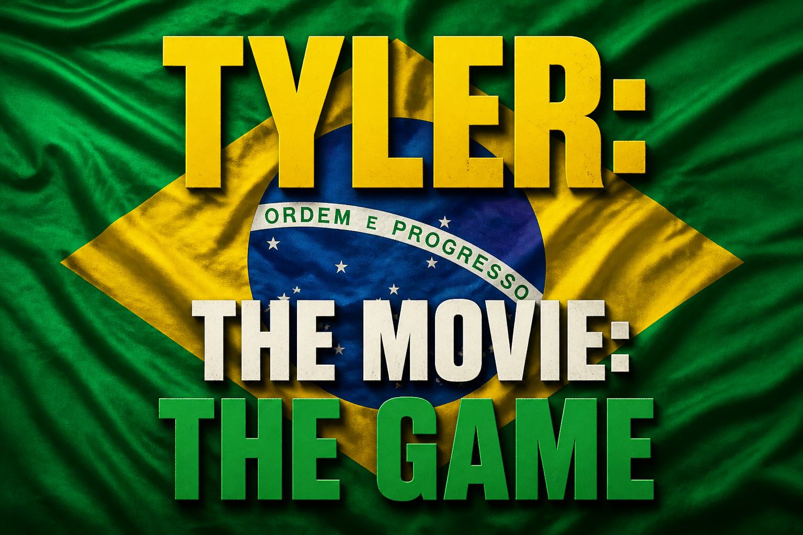

GL
George Lopez
Tyler (until 2006)

The Tyler Loftus Show is the longest-running television series in the history of the planet. It was shot entirely on the real FX soundstage with a live studio audience. The role of Tyler was played by George Lopez until 2006, when he was recast as Benicio del Toro. Until the year 2025, no copies of the show existed; they were only rediscovered in a storage unit, having been purchased at auction by Kevin Loftus (no relation).
“Visually static.”